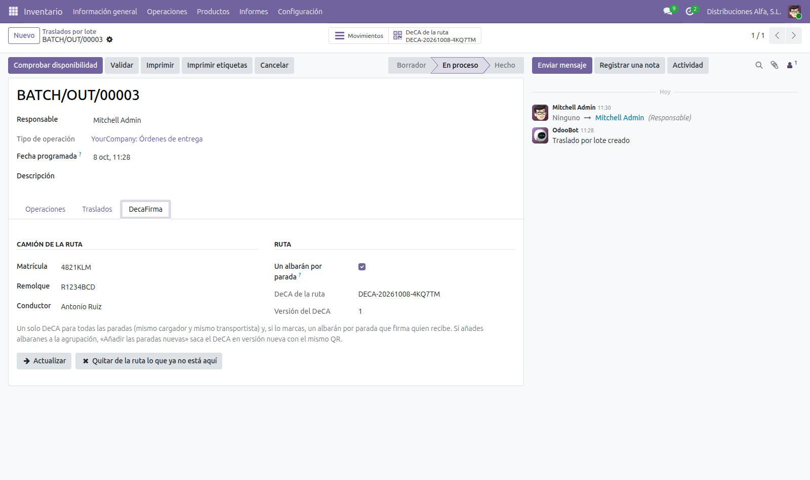

● DecaFirma de Fran<code>systems · DECA DELIVERY ROUTES
Spanish rules allow a single electronic control document (DeCA) for a whole delivery route when every stop has the same shipper and the same carrier (Resolution of 5 June 2026, section six). This module issues an Inventory batch transfer as that route in DecaFirma.
✓ Odoo 17 · 18 · 19✓ Community and Enterprise✓ Free module✓ Installed by itself
Features
Truck once
One DeCA for the route
One delivery note per stop
Routes that change
How it works
Group the transfers
An Inventory batch transfer with the outgoing transfers of the route.
Put the truck
In the DecaFirma tab of the batch: plate, trailer and driver.
Issue the route
Emitir la ruta en DecaFirma: one DeCA, and one delivery note per stop if you want.
Change it on the road
Add or remove stops: new version of the DeCA, same QR code for the driver.
Screenshots
The user interface is in Spanish: the DeCA is a Spanish legal document.
01
The DecaFirma tab of the batch
Truck of the route, one delivery note per stop, and the route DeCA with its reference and version.

What is included
| Included in the module | |
|---|---|
| Batch of outgoing transfers issued as a DecaFirma route: one DeCA for all the stops | ✓ |
| Plate, trailer and driver once, for the whole route | ✓ |
| Route DeCA QR code on the batch and on every transfer | ✓ |
| Optionally one delivery note per stop, signed on a phone | ✓ |
| Stops added or removed later: new version with the same QR code | ✓ |
| Installed by itself with DecaFirma Inventory and Batch Transfers | ✓ |
| Odoo 17, 18 and 19, Community and Enterprise. In Odoo 20 this comes inside DecaFirma Inventory | ✓ |
FAQ
→ What do I need?
DecaFirma Inventory and Batch Transfers, and a DecaFirma account with the API: it is included in the 7-day trial and, after it, comes with the Conexión add-on. The modules are free. Create your DecaFirma account.
→ And in Odoo 20?
There is no separate module: delivery routes come inside DecaFirma Inventory.
→ Can a route have several shippers?
No. One DeCA for the route requires the same shipper and the same carrier at every stop. Set the shipper in Settings > DecaFirma (your company) or on each transfer. A transfer that already has its own DeCA is cancelled before it joins a route.
→ Does any data leave my Odoo?
Yes, to DecaFirma, which is the one that issues the DeCA. Nothing until you enter your own API key. When a route is issued or updated, Odoo sends what the DeCA requires for every stop: names, tax IDs (NIF) and addresses of your company, the customers, the carrier and the driver, plates, products, packages and weights.
→ Does it work on Odoo Online?
No. Odoo Online does not install apps with Python code. It works on Odoo.sh and on your own server, Community or Enterprise.
Support
DecaFirma is made by Francodesystems, in el Vallès. We build and maintain these Odoo modules ourselves, next to the DecaFirma app and its API.
Before you start
Write to us and we will tell you honestly whether issuing from Odoo fits the way you work.
Help to set it up
API key, notices and the first DeCA, by email. If you get stuck, we look at it with you.
Kept up to date
Odoo 17, 18, 19 and 20. Fixes on every version.
juan.canton@francodesystems.com · decafirma.com
More from DecaFirma and Francodesystems
🇪🇸 EN ESPAÑOL
● DecaFirma de Fran<code>systems · RUTAS DE REPARTO CON DECA
La norma deja llevar un solo documento electrónico de control (DeCA) para toda una ruta de reparto cuando todas las paradas tienen el mismo cargador y el mismo transportista (Resolución de 5 de junio de 2026, apartado sexto). Este módulo emite una agrupación de albaranes de Inventario como esa ruta en DecaFirma.
✓ Odoo 17 · 18 · 19✓ Community y Enterprise✓ Módulo gratuito✓ Se instala solo
Funciones
El camión, una vez
Un DeCA para la ruta
Un albarán por parada
Rutas que cambian
Cómo funciona
Agrupa los albaranes
Un traslado por lote de Inventario con los albaranes de salida de la ruta.
Pon el camión
En la pestaña DecaFirma de la agrupación: matrícula, remolque y conductor.
Emite la ruta
Emitir la ruta en DecaFirma: un DeCA y, si quieres, un albarán por parada.
Cámbiala en ruta
Añade o quita paradas: versión nueva del DeCA, el mismo QR para el conductor.
Capturas
01
La pestaña DecaFirma de la agrupación
Camión de la ruta, un albarán por parada y el DeCA de la ruta con su referencia y su versión.
Qué incluye
| Incluido en el módulo | |
|---|---|
| Agrupación de albaranes de salida emitida como ruta de DecaFirma: un DeCA para todas las paradas | ✓ |
| Matrícula, remolque y conductor una sola vez, para toda la ruta | ✓ |
| QR del DeCA de la ruta en la agrupación y en cada albarán | ✓ |
| Si quieres, un albarán por parada, firmado en el móvil | ✓ |
| Paradas que se añaden o se quitan después: versión nueva con el mismo QR | ✓ |
| Se instala solo con DecaFirma: Inventario y Traslados por lote | ✓ |
| Odoo 17, 18 y 19, Community y Enterprise. En Odoo 20 va dentro de DecaFirma: Inventario | ✓ |
Preguntas
→ ¿Qué necesito?
DecaFirma: Inventario y Traslados por lote, y una cuenta de DecaFirma con la API: va incluida en la prueba de 7 días y, después, con el extra Conexión. Los módulos son gratis. Crea tu cuenta de DecaFirma.
→ ¿Y en Odoo 20?
No hay módulo aparte: las rutas de reparto van dentro de DecaFirma: Inventario.
→ ¿Una ruta puede tener varios cargadores?
No. Un DeCA para la ruta pide el mismo cargador y el mismo transportista en todas las paradas. Pon el cargador en Ajustes > DecaFirma (tu empresa) o en cada albarán. Un albarán que ya tiene su DeCA suelto se anula antes de meterlo en una ruta.
→ ¿Sale algún dato de mi Odoo?
Sí, a DecaFirma, que es quien emite el DeCA. Nada hasta que pones tu propia clave de la API. Al emitir o cambiar una ruta, Odoo manda lo que pide el DeCA de cada parada: nombres, NIF y domicilios de tu empresa, los clientes, el transportista y el conductor, matrículas, productos, bultos y pesos.
→ ¿Funciona en Odoo Online?
No. Odoo Online no instala apps con código Python. Funciona en Odoo.sh y en tu propio servidor, Community o Enterprise.
Soporte
DecaFirma lo hace Francodesystems, en el Vallès. Hacemos y mantenemos estos módulos de Odoo nosotros mismos, junto con la aplicación de DecaFirma y su API.
Antes de empezar
Escríbenos y te decimos con sinceridad si emitir desde Odoo encaja en tu forma de trabajar.
Ayuda para ponerlo en marcha
Clave de la API, avisos y el primer DeCA, por correo. Si te atascas, lo vemos contigo.
Siempre al día
Odoo 17, 18, 19 y 20. Correcciones en cada versión.
juan.canton@francodesystems.com · decafirma.com
Más de DecaFirma y Francodesystems